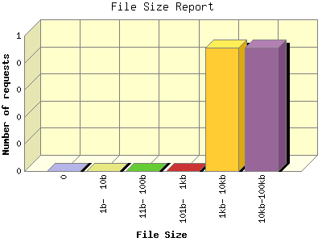

Analog 5.22
Analog 5.22 Report Magic for Analog 2.10
Report Magic for Analog 2.10The File Size Report categorizes the size of the file being requested. This can be useful in optimizing site performance. (Remember that on a 28.8Kps modem, it will take on average of 40 seconds to download 100Kb of data.)

| File Size | Number of requests | Percentage of the bytes | |
|---|---|---|---|
| 1. | 0 | 0 | 0% |
| 2. | 1b- 10b | 0 | 0% |
| 3. | 11b- 100b | 0 | 0% |
| 4. | 101b- 1kb | 0 | 0% |
| 5. | 1kb- 10kb | 1 | 18.82% |
| 6. | 10kb-100kb | 1 | 81.18% |
This report was generated on October 9, 2008 12:02.
Report time frame October 9, 2008 09:33 to October 9, 2008 11:53.
| Web statistics report produced by: | |
| Analog 5.22 | Report Magic for Analog 2.10 |